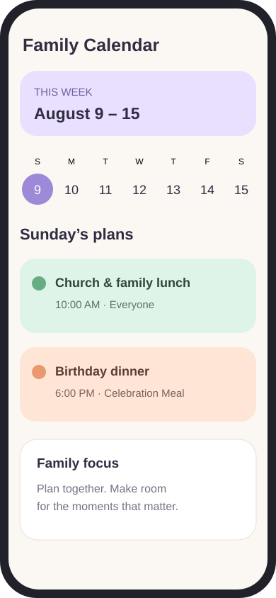
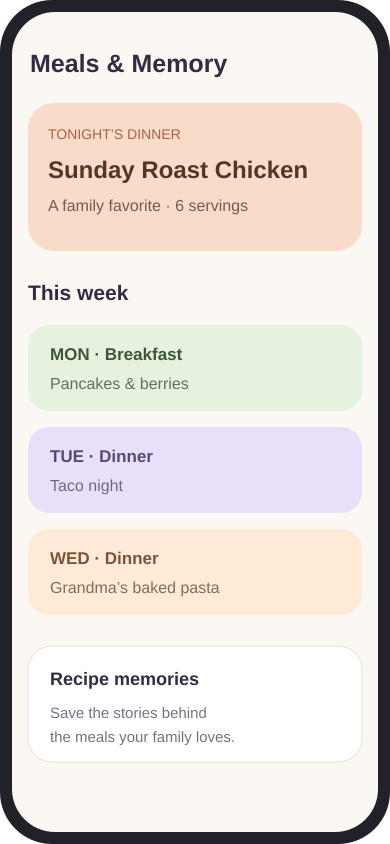

Chores & rewards
Assign repeating chores, request photo proof, approve work, and celebrate progress with points and family rewards.
A family planner with faith-friendly values
Bring chores, groceries, meals, rewards, and family plans together in one colorful place designed for all families, with faith-friendly values.
Designed for iPhone and iPad

One home for the everyday
Simple tools with warm colors, clear roles, and thoughtful details for parents and children.
Assign repeating chores, request photo proof, approve work, and celebrate progress with points and family rewards.
Create separate shopping lists, organize popular items by category, scan barcodes, save receipts, and track pantry stock and expiration dates.
Plan appointments, activities, and trips with attendees, reminders, photos, checklists, meals, and optional Apple Calendar syncing.
Plan breakfast, lunch, and dinner, import recipe photos, save family favorites, and send ingredients to a grocery list.
Premium families can securely sync supported plans through iCloud and invite trusted family members to participate.
Turn receipt, note, and pantry photos into grocery suggestions and get meal ideas based on your plans and ingredients.

Meals and Memory
Plan the week, save family favorites, import recipe photos, and keep the meals that matter close at hand.
“The ordinary moments around the table become the memories we keep.”
Simple family pricing
Try the everyday essentials, then unlock more room and shared tools when your family is ready.
AddTogether Free
A friendly way to explore the family planner.
AddTogether Premium
or $29.99 per year
More room for everything your family plans together.
Prices shown in U.S. dollars. Subscriptions are billed through Apple and automatically renew unless canceled at least 24 hours before the end of the current period. Pricing and availability may vary by region.
AddTogether support
Find quick answers to the questions families ask most often.
Open the Family tab and choose a profile under Viewing as. Profile switching is currently designed for household testing on one device.
Children earn points after a chore is completed and, when required, approved by a parent. Points can be used to request rewards from the family catalog.
Yes. Use the folder-plus button on the Grocery screen to create separate lists for weekly groceries, celebrations, holidays, trips, or any occasion.
Open Meals, tap the photo-plus button, choose a recipe photo, review the recognized details, and save it to Meals and Memory.
From Family Calendar, open the actions menu and select Apple Calendar Sync. You choose which calendars AddTogether may access.
Premium unlocks unlimited profiles, chores, grocery lists and items, and events, plus Meals and Memory, pantry tools, Apple Calendar syncing, smart suggestions, photo tools, and shared family iCloud syncing.
Information begins on your device. If you enable Premium family syncing, supported family data is also stored in your Apple iCloud account and shared only with people you invite. Photos currently remain on the device where they were added.
Monthly and yearly Premium subscriptions are purchased through Apple. You can view, change, or cancel a subscription in your Apple Account subscription settings.
Send us a message with the device you’re using and a short description of what happened.